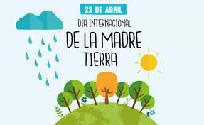

Día Internacional de la Madre Tierra 22 de abril

- 
Realizado por:
Diana Paola Pintos Ortega
4° "E"
Especialidad:
Programación
Submódulo:
Desarrola Aplicaciones Móviles
Docente:
Lic. Jose Antonio Gómez Hernández
4° "E"
Programación
Desarrola Aplicaciones Móviles
Lic. Jose Antonio Gómez Hernández
Celebramos el Día Internacional de la Madre Tierra para recordar que el planeta y sus ecosistemas nos dan la vida y ell sustento. Con este día asumimos,además la responsabilidad colectiva, como nos recordaba la Declaración de Río de 19992, de fomentar esta armonía con la naturaleza y la Madre Tierra. Este día nos brinda tambien la oportunidad de concienciar a todos loshabitantes del planeta acerca de los problemas que afectan a la Tierra y a las diferentes formas de vida que en él se desarrollan
La Asamblea General designa en su resolución A/RES/63/278 el 22 de abril como el Día Internacional de la Madre Tierra, teniendo en cuenta que en muchos países se celebra el día de la Tierra, y con el objetivo de alcanzar un justo equilibrio entre las necesidades económicas, las sociales y las ambientales de las generaciones presentes y futuras, y para promover la armonía con la naturaleza y la Tierra.
En 1992, más de 178 países firmaron la Agenda 21, la Declaración de Río sobre el Medio Ambiente y el Desarrollo, y la Declaración de Principios para la Gestión Sostenible de los Bosques
En el año 2005, la Asamblea General declaró 2008 como el Año Internacional del Planeta Tierra para promover la enseñanza de las ciencias de la Tierra
En 2012 se celebró la Conferencia de las Naciones Unidas sobre el Desarrollo Sostenible, también conocida como Rio+20. Como resultado, se elaboró un documento que contenía medidas y prácticas para implementar un desarrollo sostenible.
"Madre Tierra" es una expresión común utilizada para referirse al planeta Tierra en diversos países y regiones, lo que demuestra la interdependencia existente entre los seres humanos, las demás especies vivas y el planeta que todos habitamos
La Tierra y sus ecosistemas son nuestro hogar. Para alcanzar un justo equilibrio entre las necesidades económicas, sociales y ambientales de las generaciones presentes y futuras, es necesario promover la armonía con la naturaleza y el planeta

Con motivo del décimo aniversario del Día de la Madre Tierra, este año se celebra el noveno Diálogo sobre armonía con la naturaleza de la Asamblea General, el día 22 de abril en la Sede de la ONU de Nueva York, en el Salón del Consejo de Administración Fiduciaria.
El Diálogo Interactivo gira en torno al tema "La Madre tierra en la aplicación de la educación sobre el cambio climático".
Va a servir para discutir las contribuciones de Armonía con la Naturaleza en garantizar una educación inclusiva, equitativa y de calidad para tomar medidas urgentes para combatir el cambio climático y sus impactos, e inspirar a los ciudadanos y las sociedades a reconsiderar cómo interactúan con el mundo natural en el contexto del desarrollo sostenible, la erradicación de la pobreza y la justicia climática, para garantizar que las personas en todo el mundo tengan la información y el conocimiento necesarios para alcanzar el desarrollo sostenible y los estilos de vida en armonía con la naturaleza.
La Asamblea General designa en su resolución A/RES/63/278 el 22 de abril como el Día Internacional de la Madre Tierra, teniendo en cuenta que en muchos países se celebra el día de la Tierra, y con el objetivo de alcanzar un justo equilibrio entre las necesidades económicas, las sociales y las ambientales de las generaciones presentes y futuras, y para promover la armonía con la naturaleza y la Tierra.
Invita a todos los Estados Miembros, las organizaciones del sistema de las Naciones Unidas, las organizaciones internacionales, regionales y subregionales, la sociedad civil, las organizaciones no gubernamentales y las partes interesadas a observar el Día Internacional de la Madre Tierra y crear conciencia al respecto, según proceda.